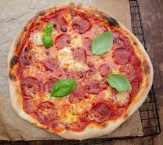

Home
Pizza

Description
Homemade pizza is one of the most rewarding dishes you can make from scratch. A crispy, chewy dough topped with rich tomato sauce and melted mozzarella is the foundation for endless toppings and combinations.
This recipe uses a simple yeast dough that only needs one rise, making it achievable on any evening. The result is a pizza that beats any takeaway — golden on the bottom, bubbling on top, and bursting with flavour.
Ingredients
- 500g bread flour
- 7g fast-action dried yeast
- 1 tsp sugar
- 1 tsp salt
- 300ml warm water
- 2 tbsp olive oil
- 1 can crushed tomatoes
- 2 garlic cloves, minced
- 1 tsp dried oregano
- 250g fresh mozzarella, sliced
- Toppings of your choice (pepperoni, peppers, mushrooms, etc.)
- Fresh basil, to serve
- Salt and pepper to taste
Steps
- Mix flour, yeast, sugar, and salt in a large bowl. Add warm water and olive oil, then mix into a dough.
- Knead the dough on a floured surface for 8-10 minutes until smooth and elastic.
- Place in an oiled bowl, cover with a cloth, and let rise for 1 hour until doubled in size.
- Preheat oven to 250°C (480°F) with a baking tray inside to heat up.
- Mix crushed tomatoes, garlic, oregano, salt, and pepper together to make the sauce.
- Divide the dough in half. On a floured surface, stretch or roll each piece into a thin round.
- Spread the tomato sauce over the dough, leaving a border around the edge.
- Lay mozzarella slices over the sauce and add your chosen toppings.
- Carefully slide the pizza onto the hot baking tray and bake for 10-12 minutes until the crust is golden and the cheese is bubbling.
- Top with fresh basil leaves and serve immediately.